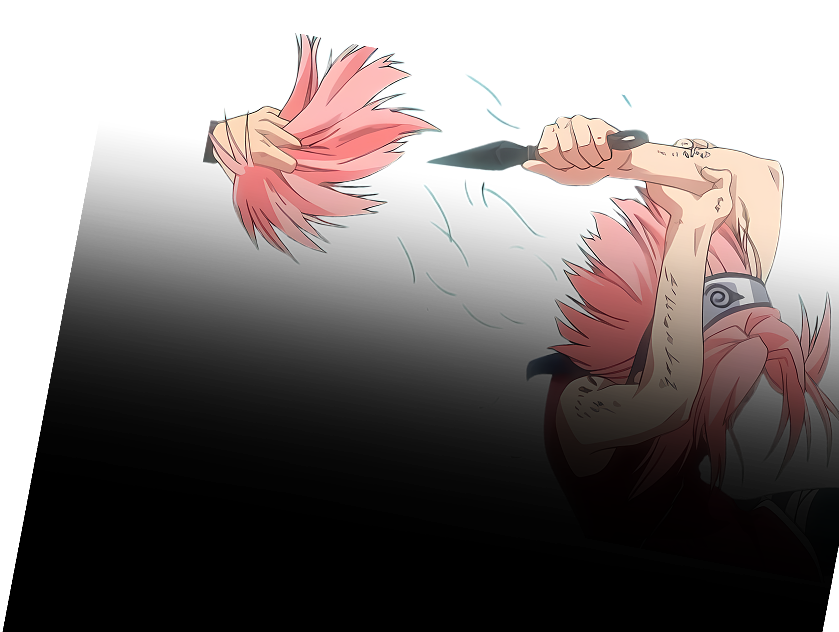
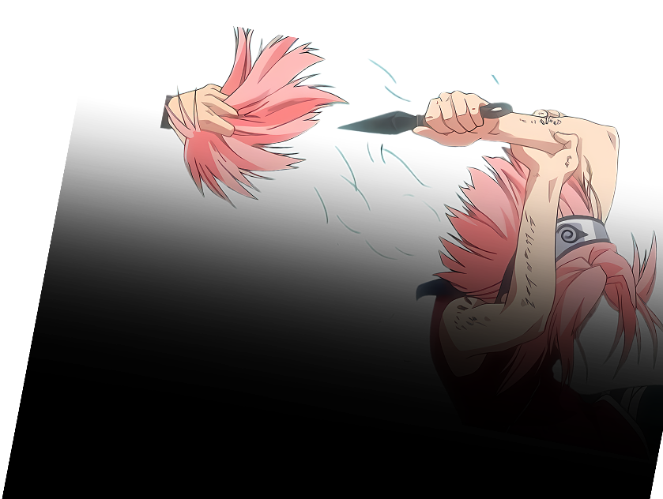

Sakura's Naruto journey is one of growth and friendship. From timid beginnings to formidable kunoichi, her story showcases the power of perseverance and companionship. Through challenges and support, Sakura embodies the series' themes of growth and resilience.
 
